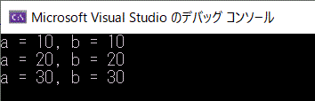
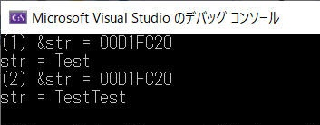
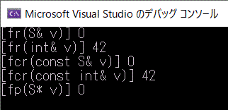
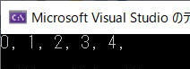
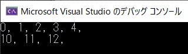
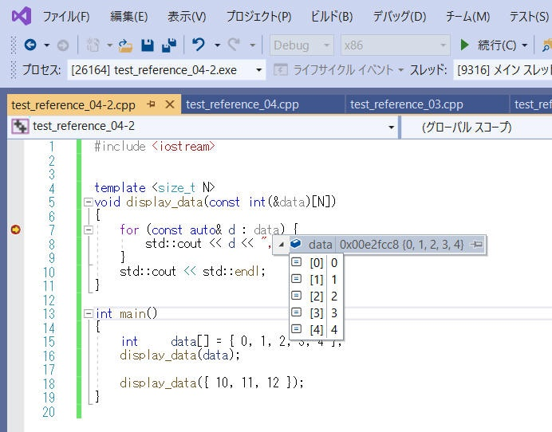
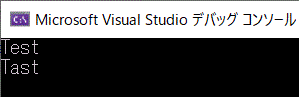
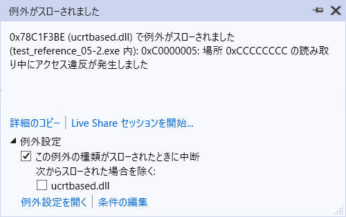
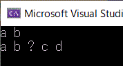

参照 (左辺値参照) は、オブジェクトの別名のように振る舞います。
例えば関数の仮引数を参照にすることで、無駄なコピーが発生しません。これは特に大きなオブジェクトを関数へ渡す場合に、コピーによるメモリ消費を抑えられ、同時にコピー処理による時間もかからないため有効です。
c++11 で、右辺値参照とムーブセマンティクス、という機能が追加になりました。
右辺値参照は "一時オブジェクト"
を参照することができるようになり、大きなコピーコストを気にすることなく扱うことができます。
これら参照機能を有効に活用できるようになることで、低コストで有効なプログラムを作成できるようになりましょう。
参照変数宣言は、宣言子が以下の形式を持つ単純宣言です。
<cv修飾子> 型名 & attr(オプション) declarator
= 初期化子; |
(1) | ||||||||
<cv修飾子> 型名 && attr(オプション) declarator
= 初期化子; |
(2) | (c++11) | |||||||
(1) 左辺値参照宣言子 － 宣言 S& D; は S によって決定される型への左辺値参照として D を宣言します。
(2) 右辺値参照宣言子 － 宣言 S&& D; は S によって決定される型への右辺値参照として D を宣言します。
declarator - 別の参照宣言子を除く任意の宣言子。
attr(c++11) - オプショナルな属性のリスト。
補足です。
int& a[3]; // エラー int&* p; // エラー int& &r; // エラー
左辺値参照とは、既存のオブジェクトをエイリアスするために使用できます。
C++03では、参照といえばこの左辺値参照でしたし左辺値参照という言葉自体も当時なかったように記憶します。C++11で後述の右辺値参照が登場したことで、これと区別するために恐らく左辺値参照という言葉が定義されたのではないかと推察します。
まずは左辺値参照を簡単に使用してみます。
基本的な変数をエイリアスする使い方の例を以下に示します。
[環境]
[プログラムソース "test_reference_01.cpp"]
#include <iostream>
int main()
{
int a = 10;
int& b = a; // b は a の参照
//int& c; // エラー。参照は必ず初期化されねばならない
int d = 30;
std::cout << "a = " << a << ", b = " << b << std::endl;
b = 20; // a の値は 20 になる
std::cout << "a = " << a << ", b = " << b << std::endl;
b = d; // 参照先は変更できない。d の値が b,a に代入され、a の値は 30 になる。
std::cout << "a = " << a << ", b = " << b << std::endl;
}
[実行結果]

参照は、関数の仮引数でも使用できます。
関数の仮引数を参照にすることで、無駄なコピーを発生しません。これは特に大きなオブジェクトを関数へ渡す場合にコピーによるメモリ消費を抑えられ、コピー処理による時間もかからないため、とても有効です。
[環境]
[プログラムソース "test_reference_02.cpp"]
#include <iostream>
#include <string>
void double_string(std::string& str) {
std::cout << "(2) &str = " << &str << std::endl; // 変数 str のアドレスを出力
str += str;
}
int main()
{
std::string str = "Test";
std::cout << "(1) &str = " << &str << std::endl; // 変数 str のアドレスを出力
std::cout << "str = " << str << std::endl;
double_string(str);
std::cout << "str = " << str << std::endl;
}
[実行結果]

参照は、ポインタと違い、一時オブジェクトや定数も const 参照へ渡すことができます。
[プログラムソース "test_reference_03.cpp"]
#include <iostream>
struct S {
int data = 0;
};
void fr(S& v) {
std::cout << "[fr(S& v)] " << v.data << std::endl;
}
void fr(int& v) {
std::cout << "[fr(int& v)] " << v << std::endl;
}
void fcr(const S& v) {
std::cout << "[fcr(const S& v)] " << v.data << std::endl;
}
void fcr(const int& v) {
std::cout << "[fcr(const int& v)] " << v << std::endl;
}
void fp(S* v) {
std::cout << "[fp(S* v)] " << v->data << std::endl;
}
void fp(int* v) {
std::cout << *v << std::endl;
}
int main()
{
S s;
int a = 42;
fr(s);
fr(a);
//fr(S()); // エラー。一時オブジェクトを参照で渡すことはできない。
//fr(42); // エラー。整数リテラルを参照で渡すことはできない。
fcr(S()); // OK。一時オブジェクトを const 参照で渡すことはできる。
fcr(42); // OK。整数リテラルを const 参照で渡すことはできる。
fp(&s); // OK。
//fp(&S()); // エラー。一時オブジェクトのアドレスは取得できない。
//fp(&42); // エラー。整数リテラルのアドレスは取得できない。
}
[実行結果]

参照は、下記のような表記で固定長配列を渡すことができます。
ポインタ渡しと異なり、配列長が不一致の時にコンパイラがエラーにすること、デバッガでブレークしたときに配列の中身を閲覧しやすいこと、などがメリットです。静的解析ツールでエラーを見つけやすくなることも良い点です。
[環境]
[プログラムソース "test_reference_04.cpp"]
#include <iostream>
const size_t N = 5;
void display_data( const int(&data)[N] )
{
for ( const auto& d : data ) {
std::cout << d << ", ";
}
std::cout << std::endl;
}
int main()
{
int data[N] = {0, 1, 2, 3, 4};
display_data(data);
}
[実行結果]

template を使うことで次のように表記することもできます。
[プログラムソース "test_reference_04-2.cpp"]
#include <iostream>
template <size_t N>
void display_data( const int(&data)[N] )
{
for (const auto& d : data) {
std::cout << d << ", ";
}
std::cout << std::endl;
}
int main()
{
int data[] = { 0, 1, 2, 3, 4 };
display_data(data);
display_data({ 10, 11, 12 });
}
[実行結果]

[デバッガ（Visual Studio）でブレークした時の様子]
VS2019でデバッグ実行中に中断した時の様子を下図に示します。
配列を関数へポインタ渡しした場合、こういう風に変数中の内容を確認できません。やっぱり便利です。

注意
template による実現は、使用する N のバリエーションが増えるとコンパイル後のプログラムサイズ増大の原因となります。N の値毎に別の関数を自動的に実装される、という感じになります。安易に多用することは避けたほうが良いと考えます。
一方、template と似た技術に generic があります。generic ではこういった課題はありません。template と generic は実現方法が異なるので注意が必要です。（generic は Java や .NET などで採用されている template と似た技術です。c++にはありません。）
参照は、関数の戻り値でも使用できます。以下で例を示します。
私個人の感想としては、この手法を必要とするシチュエーションを思いつきません。代用手段があるように思われ無理に参照を使用する必要はないように思います。
[評価環境]
| コンパイラ : | Visual Studio 2019 pro., | Version 16.4.0 |
| OS: | Windows10 home, | Version 1909 |
[プログラムソース "test_reference_05.cpp"]
#include <iostream>
#include <string>
char& char_number(std::string& s, size_t n) {
return s.at(n); // string::at() は char を返します。
}
int main() {
std::string str = "Test";
std::cout << str << '\n';
char_number(str, 1) = 'a'; // この関数呼び出しは str[1] を示す左辺値であり、代入できます。
std::cout << str << '\n';
}
[実行結果]

関数の戻り値として参照が渡されるのでここに代入することができる、という例でした。
一方、戻り値として渡される参照元が関数内で作成した一時変数である場合、関数から戻るときにこの一時変数が解放されてしまうためうまく行きません。
以下にうまく動作しない例を示します。コンパイルはエラー無しに完了するのですが、実行時に Access Violation の例外がスローされます。
（参照で戻す意味のない例ですがご容赦ください。普通に値で返せば良いだけの例です。）
#include <iostream>
#include <string>
using namespace std;
string& string_builder(const string a, const string b)
{
string str;
str = str + a + " " + b + " ";
return str;
}
int main()
{
string& str = string_builder("a", "b");
cout << str << endl; // <- ここで例外発生 !!
}
この例は、コンパイルは通るのですが実行時に例外が発生します。0xC0000005 は"Access Violation"ですね。確保されていないメモリ領域へのアクセスによる例外発生です。

このようなことを行いたい場合、対象の変数(ここでは str)を static 指定することで一時変数ではなくなり関数を終了後も実体が残るようになります。関数内部の変数の参照を関数の戻り値として返すことができるようになります。
#include <iostream>
#include <string>
using namespace std;
string& string_builder(const string a, const string b)
{
static string str;
str = str + a + " " + b + " ";
return str;
}
int main()
{
string& str = string_builder("a", "b");
cout << str << endl;
str += "? ";
string_builder("c", "d");
cout << str << endl;
}
[実行結果]

C++03
までは「コピー」という概念でデータが管理されていました。通常「a=b;」という式は「bをaにコピーする」という意味を持ちます。このとき、aとbは同じデータを異なる領域に持ちます。これは小さいデータの場合には問題になりにくいですが、大きなデータを扱う場合にコピーコストと同じデータが２つできてしまうコストが問題となる場合があります。
C++11から追加されたムーブセマンティクスという概念と、その言語機能である右辺値参照を使用することで解決(？改善)できます。
例えば以下のケースを考えてみましょう。
vector<X> make_data() {
vector<X> v;
・・・大量のデータを v へ追加する・・・
return v;
}
vector<X> v = make_data();
ここでは大きな要素数を持つ可変長配列オブジェクトを関数の return
文で返し、それを新たな可変長配列オブジェクトで受け取っています。
その際、make_data()関数が返すオブジェクトからオブジェクト v
へのコピーが発生します。make_data()関数によって返されたオブジェクトは、その関数が評価された後は消えてしまうことから一時オブジェクトと呼ばれます。
C++11から追加された機能である右辺値参照は、一時オブジェクトを参照する機能です。C++11の std::vector
クラスでは、一時オブジェクトを参照するコンストラクタが追加されています。以下に疑似実装を紹介します。
template <class T, class Allocator=allocator<T>>
class vector {
T* data_;
size_t size_;
public:
･･･
// 一時オブジェクトを参照するコンストラクタ
vector( vector&& rhd ){
data_ = rhd.data_;
size_ = rhd.size_;
rhd.data_ = nullptr;
rhd.size_ = 0;
}
// これまで通りのコピーコンストラクタ
vector( vector& rhd ){
// rhd から自身へコピーする ･･･
}
};
一時オブジェクトを参照する右辺値参照には、&&という記号を使用します。&&が付いた仮引数を受け取る関数は、その型の一時オブジェクトを受け取ります。一時オブジェクトは評価されたらすぐに破棄されるので、多くの場所で破壊しても構わないものとして扱えます。
std::vector クラスの右辺値参照を受け取るコンストラクタでは、一時オブジェクトが持つデータ（可変長配列を表すポインタ、サイズ、その他のデータ）を
*this につなぎ変えたあと、一時オブジェクトが持つデータを無効にしています。こうすることで大きなデータのコピーコストを気にすることなく扱えます。
本ページの情報は、特記無い限り下記 MIT ライセンスで提供されます。
| 2022-08-16 | - | ページデザイン更新 |
| 2019-11-16 | - | 新規作成 |